贊助性質
- 贊助為自願支持遊戲營運，不是購買商品或虛擬點數。
- 沒有實體商品，不需要配送。
- 贊助完成後，致謝會在隔天的《天后宮日報》出現。
很多人離家工作、出國讀書，或年紀大了不方便出門，想拜拜卻走不到廟裡。雲端天后宮把一座台灣傳統廟宇做成 3D 場景：正殿、偏殿、後殿、金爐、廟埕，一樣的動線、一樣的參拜順序。
進廟的人會看到彼此。有人在擲筊，有人在排隊收驚，有人坐在廟埕看煙火。每天早上，廟裡還會送來一份「天后宮日報」，報導昨天廟裡發生的大小事。
遊戲完全免費，沒有付費才能用的功能。香油錢贊助是自願的，用來支付伺服器、美術與音樂的費用，讓這座廟能一直開著。
參拜照著台灣廟宇的習俗走，其餘的就像在廟口散步。
從服務處請香、金紙、供品開始，一步一步帶你拜完全廟。
聖筊、笑筊、陰筊照真實機率；求到籤可以看籤詩解說。
點一盞光明燈，在許願樹掛上心願，大家都看得到。
金爐旁的阿嬤幫你收驚，老師傅幫你看看運勢。
文昌帝君、土地公、觀音等神明各有一個小挑戰與排行榜。
地瓜球、烤肉、撈金魚、彈珠台，晚上廟口最熱鬧。
五十個蒲團的禪堂，溫泉和可以睡覺的房間。
每天一份，報導昨天的紀錄、天氣和廟裡的趣事。
以下全部是遊戲裡的實際畫面。
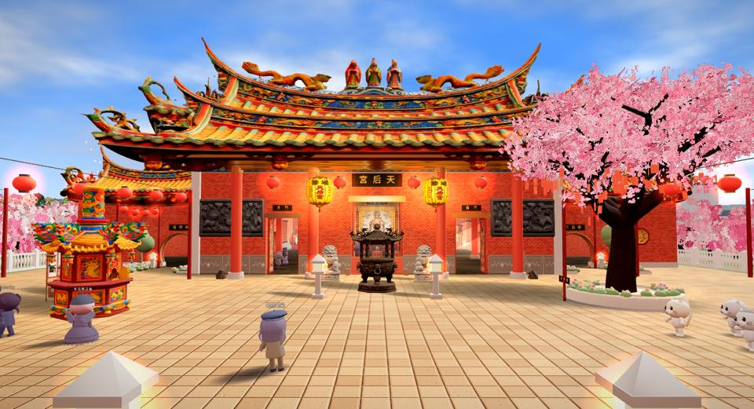
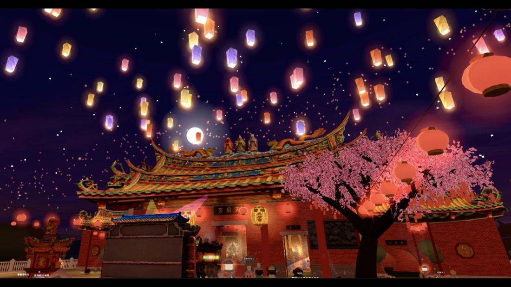
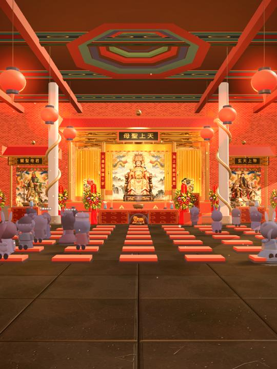
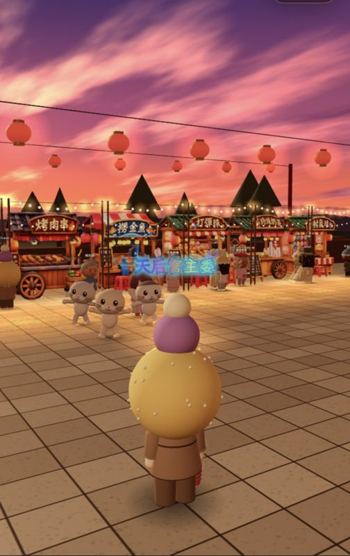
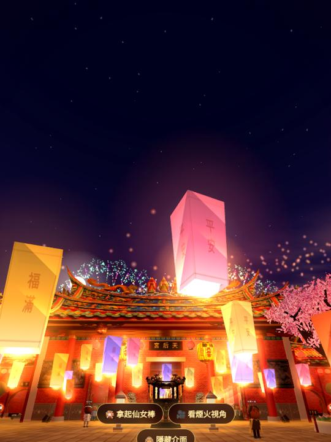
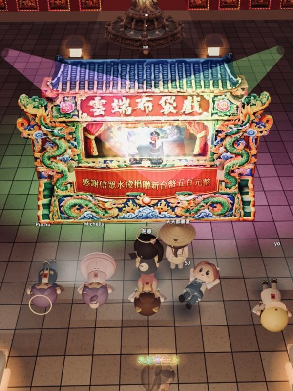
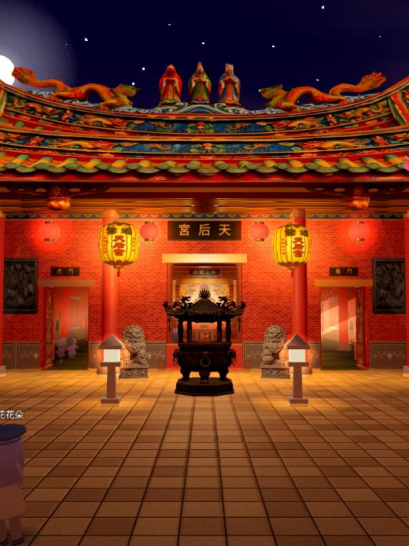
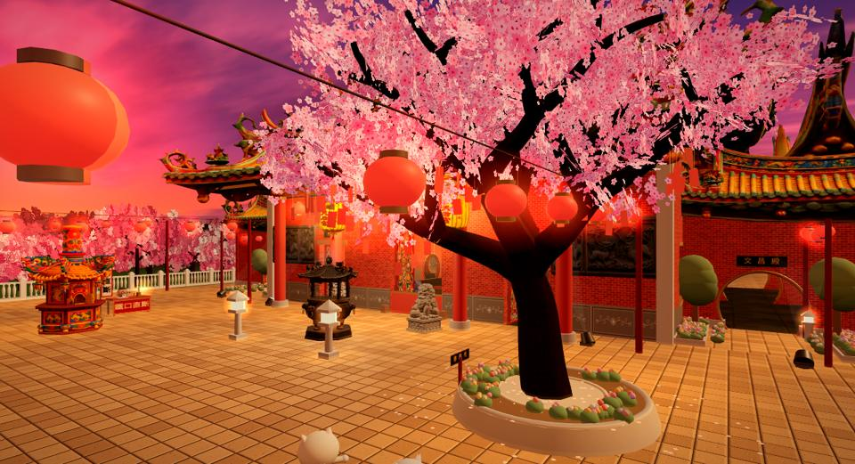
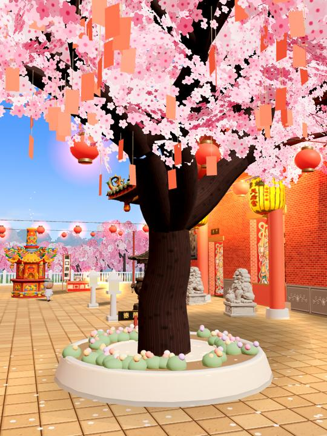
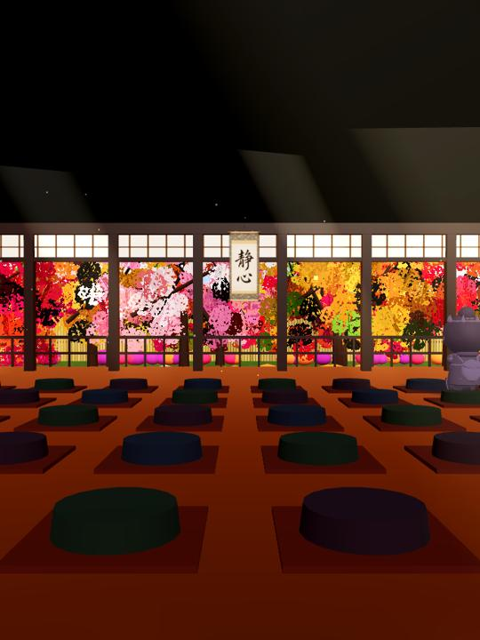
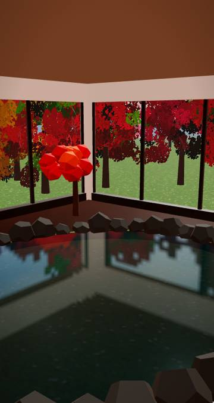
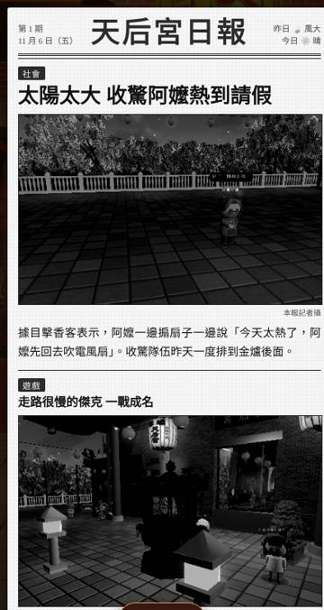
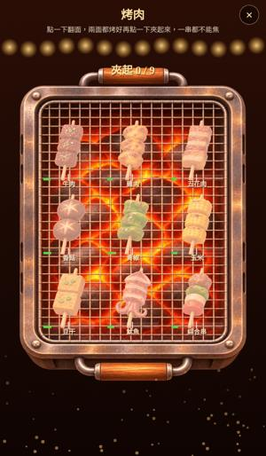
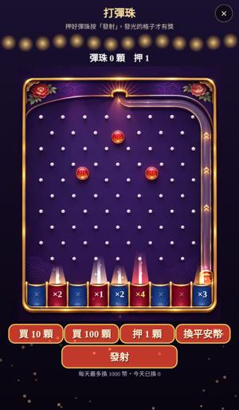
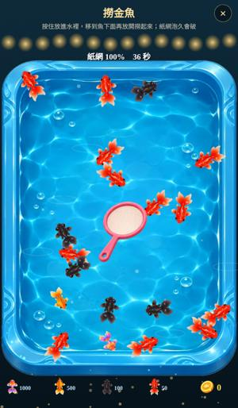
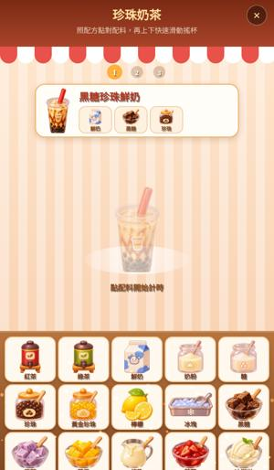
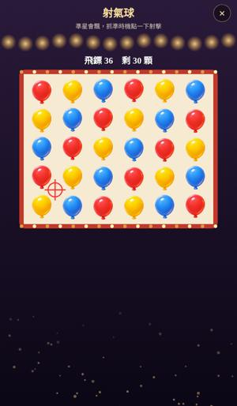
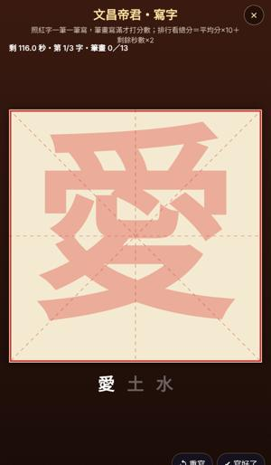
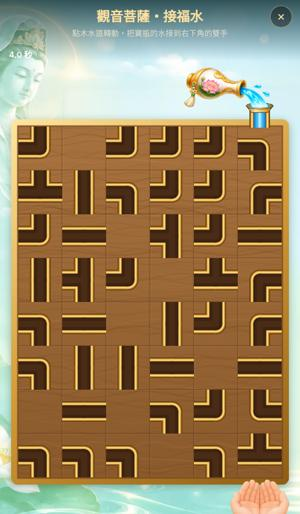
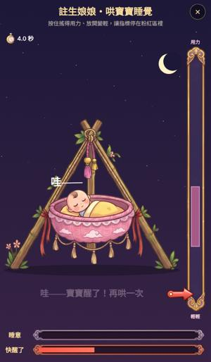
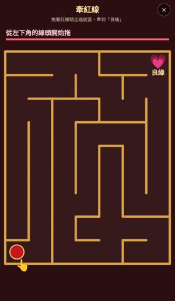
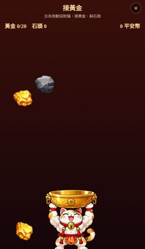
贊助是自願支持營運，不會換得遊戲內的優勢。每一位贊助者都會在隔天的《天后宮日報》頭版受到感謝（也可以選擇匿名）。
由合作金流公司處理付款，本站不會經手或儲存你的信用卡資料。
黃底為待確認的內容（贊助金額、付款方式），上線前請確認。
贊助為自願支持，不開立發票，也不開立收據。如需付款紀錄，請參考付款時的付款通知或來信客服信箱。
遊戲只使用玩家自己取的遊戲暱稱與遊玩紀錄（例如參拜次數），不需要也不收集真實姓名。付款資料由金流公司依其隱私政策處理。
不用。所有功能都免費，贊助完全自願。
不會。贊助只會換來日報上的致謝，不影響排行榜、機率或任何玩法。
可以。付款時在備註寫「匿名」，日報上會寫成「善心香客」。
不需要。用手機或電腦的瀏覽器打開網址就能進廟。
對贊助、退款或遊戲有任何問題，請來信，我們會盡快回覆。